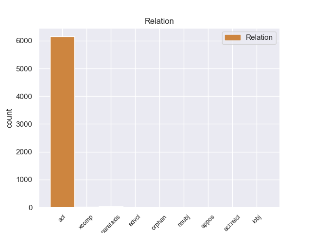
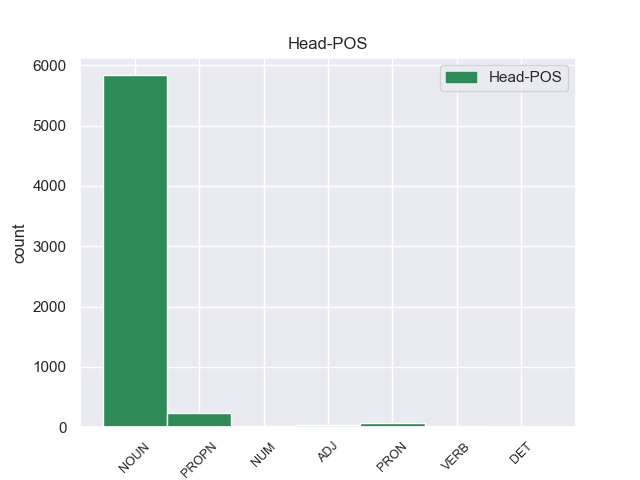
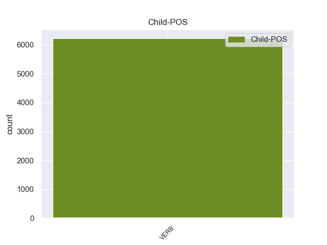

Distribution of features within this leaf



Agreement Rules sorted by frequency.
- When the dependent token is the adjectival clause(acl) of the head token, and the dependent token is VERB.
1 Его _ _ _ _ 0 _ _ _
2 не _ _ _ _ 0 _ _ _
3 защищенные защитить VERB _ Aspect=Perf|Case=Nom|Number=Plur|Tense=Past|VerbForm=Part|Voice=Pass 5 acl 5:acl _
4 очками _ _ _ _ 0 _ _ _
5 глаза глаз NOUN _ Animacy=Inan|Case=Nom|Gender=Masc|Number=Plur 0 _ _ _
6 оказались _ _ _ _ 0 _ _ _
7 в _ _ _ _ 0 _ _ _
8 еле _ _ _ _ 0 _ _ _
9 приметном _ _ _ _ 0 _ _ _
10 красном _ _ _ _ 0 _ _ _
11 обводе _ _ _ _ 0 _ _ _
12 , _ _ _ _ 0 _ _ _
13 будто _ _ _ _ 0 _ _ _
14 кто-то _ _ _ _ 0 _ _ _
15 - _ _ _ _ 0 _ _ _
16 провел _ _ _ _ 0 _ _ _
17 по _ _ _ _ 0 _ _ _
18 векам _ _ _ _ 0 _ _ _
19 тончайшей _ _ _ _ 0 _ _ _
20 кисточкой _ _ _ _ 0 _ _ _
21 . _ _ _ _ 0 _ _ _
1 Более _ _ _ _ 0 _ _ _
2 того _ _ _ _ 0 _ _ _
3 - _ _ _ _ 0 _ _ _
4 жизненную _ _ _ _ 0 _ _ _
5 необходимость _ _ _ _ 0 _ _ _
6 для _ _ _ _ 0 _ _ _
7 решения _ _ _ _ 0 _ _ _
8 в _ _ _ _ 0 _ _ _
9 планетарных _ _ _ _ 0 _ _ _
10 масштабах _ _ _ _ 0 _ _ _
11 задач _ _ _ _ 0 _ _ _
12 связи _ _ _ _ 0 _ _ _
13 , _ _ _ _ 0 _ _ _
14 навигации _ _ _ _ 0 _ _ _
15 , _ _ _ _ 0 _ _ _
16 прогнозирования _ _ _ _ 0 _ _ _
17 разнообразных _ _ _ _ 0 _ _ _
18 стихийных _ _ _ _ 0 _ _ _
19 бедствий бедствие NOUN _ Animacy=Inan|Case=Gen|Gender=Neut|Number=Plur 0 _ _ _
20 , _ _ _ _ 0 _ _ _
21 ( _ _ _ _ 0 _ _ _
22 в _ _ _ _ 0 _ _ _
23 первую _ _ _ _ 0 _ _ _
24 очередь _ _ _ _ 0 _ _ _
25 , _ _ _ _ 0 _ _ _
26 связанных связать VERB _ Aspect=Perf|Case=Gen|Number=Plur|Tense=Past|VerbForm=Part|Voice=Pass 19 parataxis 19:parataxis _
27 с _ _ _ _ 0 _ _ _
28 метеорологическими _ _ _ _ 0 _ _ _
29 процессами _ _ _ _ 0 _ _ _
30 ) _ _ _ _ 0 _ _ _
31 , _ _ _ _ 0 _ _ _
32 постоянного _ _ _ _ 0 _ _ _
33 изучения _ _ _ _ 0 _ _ _
34 географической _ _ _ _ 0 _ _ _
35 оболочки _ _ _ _ 0 _ _ _
36 планеты _ _ _ _ 0 _ _ _
37 для _ _ _ _ 0 _ _ _
38 целей _ _ _ _ 0 _ _ _
39 ее _ _ _ _ 0 _ _ _
40 успешного _ _ _ _ 0 _ _ _
41 освоения _ _ _ _ 0 _ _ _
42 , _ _ _ _ 0 _ _ _
43 оптимизации _ _ _ _ 0 _ _ _
44 взаимодействия _ _ _ _ 0 _ _ _
45 с _ _ _ _ 0 _ _ _
46 ней _ _ _ _ 0 _ _ _
47 индустрии _ _ _ _ 0 _ _ _
48 . _ _ _ _ 0 _ _ _
1 Весь _ _ _ _ 0 _ _ _
2 лес _ _ _ _ 0 _ _ _
3 был _ _ _ _ 0 _ _ _
4 населен _ _ _ _ 0 _ _ _
5 голосами _ _ _ _ 0 _ _ _
6 прошлого _ _ _ _ 0 _ _ _
7 , _ _ _ _ 0 _ _ _
8 и _ _ _ _ 0 _ _ _
9 я _ _ _ _ 0 _ _ _
10 впервые _ _ _ _ 0 _ _ _
11 с _ _ _ _ 0 _ _ _
12 ошеломляющей _ _ _ _ 0 _ _ _
13 силой _ _ _ _ 0 _ _ _
14 ощутил _ _ _ _ 0 _ _ _
15 , _ _ _ _ 0 _ _ _
16 как _ _ _ _ 0 _ _ _
17 много _ _ _ _ 0 _ _ _
18 пробыл _ _ _ _ 0 _ _ _
19 на _ _ _ _ 0 _ _ _
20 этом _ _ _ _ 0 _ _ _
21 свете _ _ _ _ 0 _ _ _
22 и _ _ _ _ 0 _ _ _
23 что _ _ _ _ 0 _ _ _
24 прожитое прожить VERB _ Aspect=Perf|Case=Nom|Gender=Neut|Number=Sing|Tense=Past|VerbForm=Part|Voice=Pass 28 nsubj 28:nsubj _
25 - _ _ _ _ 0 _ _ _
26 это _ _ _ _ 0 _ _ _
27 не _ _ _ _ 0 _ _ _
28 разбег разбег NOUN _ Animacy=Inan|Case=Nom|Gender=Masc|Number=Sing 0 _ _ _
29 для _ _ _ _ 0 _ _ _
30 взлета _ _ _ _ 0 _ _ _
31 в _ _ _ _ 0 _ _ _
32 какую-то _ _ _ _ 0 _ _ _
33 будущую _ _ _ _ 0 _ _ _
34 , _ _ _ _ 0 _ _ _
35 настоящую _ _ _ _ 0 _ _ _
36 жизнь _ _ _ _ 0 _ _ _
37 , _ _ _ _ 0 _ _ _
38 что _ _ _ _ 0 _ _ _
39 это _ _ _ _ 0 _ _ _
40 уже _ _ _ _ 0 _ _ _
41 жизнь _ _ _ _ 0 _ _ _
42 , _ _ _ _ 0 _ _ _
43 в _ _ _ _ 0 _ _ _
44 которой _ _ _ _ 0 _ _ _
45 все _ _ _ _ 0 _ _ _
46 связано _ _ _ _ 0 _ _ _
47 : _ _ _ _ 0 _ _ _
48 далекое _ _ _ _ 0 _ _ _
49 прошлое _ _ _ _ 0 _ _ _
49.1 _ _ _ _ _ 0 _ _ _
50 с _ _ _ _ 0 _ _ _
51 настоящим _ _ _ _ 0 _ _ _
52 , _ _ _ _ 0 _ _ _
53 а _ _ _ _ 0 _ _ _
54 если _ _ _ _ 0 _ _ _
55 мне _ _ _ _ 0 _ _ _
56 суждено _ _ _ _ 0 _ _ _
57 будущее _ _ _ _ 0 _ _ _
58 , _ _ _ _ 0 _ _ _
59 то _ _ _ _ 0 _ _ _
60 и _ _ _ _ 0 _ _ _
61 оно _ _ _ _ 0 _ _ _
62 окажется _ _ _ _ 0 _ _ _
63 нерасторжимо _ _ _ _ 0 _ _ _
64 связанным _ _ _ _ 0 _ _ _
65 с _ _ _ _ 0 _ _ _
66 пережитым _ _ _ _ 0 _ _ _
67 ; _ _ _ _ 0 _ _ _
1 Весь _ _ _ _ 0 _ _ _
2 лес _ _ _ _ 0 _ _ _
3 был _ _ _ _ 0 _ _ _
4 населен _ _ _ _ 0 _ _ _
5 голосами _ _ _ _ 0 _ _ _
6 прошлого _ _ _ _ 0 _ _ _
7 , _ _ _ _ 0 _ _ _
8 и _ _ _ _ 0 _ _ _
9 я _ _ _ _ 0 _ _ _
10 впервые _ _ _ _ 0 _ _ _
11 с _ _ _ _ 0 _ _ _
12 ошеломляющей _ _ _ _ 0 _ _ _
13 силой _ _ _ _ 0 _ _ _
14 ощутил _ _ _ _ 0 _ _ _
15 , _ _ _ _ 0 _ _ _
16 как _ _ _ _ 0 _ _ _
17 много _ _ _ _ 0 _ _ _
18 пробыл _ _ _ _ 0 _ _ _
19 на _ _ _ _ 0 _ _ _
20 этом _ _ _ _ 0 _ _ _
21 свете _ _ _ _ 0 _ _ _
22 и _ _ _ _ 0 _ _ _
23 что _ _ _ _ 0 _ _ _
24 прожитое _ _ _ _ 0 _ _ _
25 - _ _ _ _ 0 _ _ _
26 это _ _ _ _ 0 _ _ _
27 не _ _ _ _ 0 _ _ _
28 разбег _ _ _ _ 0 _ _ _
29 для _ _ _ _ 0 _ _ _
30 взлета _ _ _ _ 0 _ _ _
31 в _ _ _ _ 0 _ _ _
32 какую-то _ _ _ _ 0 _ _ _
33 будущую _ _ _ _ 0 _ _ _
34 , _ _ _ _ 0 _ _ _
35 настоящую _ _ _ _ 0 _ _ _
36 жизнь _ _ _ _ 0 _ _ _
37 , _ _ _ _ 0 _ _ _
38 что _ _ _ _ 0 _ _ _
39 это _ _ _ _ 0 _ _ _
40 уже _ _ _ _ 0 _ _ _
41 жизнь _ _ _ _ 0 _ _ _
42 , _ _ _ _ 0 _ _ _
43 в _ _ _ _ 0 _ _ _
44 которой _ _ _ _ 0 _ _ _
45 все _ _ _ _ 0 _ _ _
46 связано _ _ _ _ 0 _ _ _
47 : _ _ _ _ 0 _ _ _
48 далекое _ _ _ _ 0 _ _ _
49 прошлое _ _ _ _ 0 _ _ _
49.1 _ _ _ _ _ 0 _ _ _
50 с _ _ _ _ 0 _ _ _
51 настоящим _ _ _ _ 0 _ _ _
52 , _ _ _ _ 0 _ _ _
53 а _ _ _ _ 0 _ _ _
54 если _ _ _ _ 0 _ _ _
55 мне _ _ _ _ 0 _ _ _
56 суждено _ _ _ _ 0 _ _ _
57 будущее _ _ _ _ 0 _ _ _
58 , _ _ _ _ 0 _ _ _
59 то _ _ _ _ 0 _ _ _
60 и _ _ _ _ 0 _ _ _
61 оно _ _ _ _ 0 _ _ _
62 окажется _ _ _ _ 0 _ _ _
63 нерасторжимо _ _ _ _ 0 _ _ _
64 связанным связать VERB _ Aspect=Perf|Case=Ins|Gender=Neut|Number=Sing|Tense=Past|VerbForm=Part|Voice=Pass 0 _ _ _
65 с _ _ _ _ 0 _ _ _
66 пережитым пережить VERB _ Aspect=Perf|Case=Ins|Gender=Neut|Number=Sing|Tense=Past|VerbForm=Part|Voice=Pass 64 xcomp 64:xcomp SpaceAfter=No
67 ; _ _ _ _ 0 _ _ _
1 Между _ _ _ _ 0 _ _ _
2 подводами _ _ _ _ 0 _ _ _
3 слонялись _ _ _ _ 0 _ _ _
4 страшные _ _ _ _ 0 _ _ _
5 люди _ _ _ _ 0 _ _ _
6 с _ _ _ _ 0 _ _ _
7 плоскими плоский ADJ _ Case=Ins|Degree=Pos|Number=Plur 0 _ _ _
8 , _ _ _ _ 0 _ _ _
9 будто _ _ _ _ 0 _ _ _
10 раздавленными раздавить VERB _ Aspect=Perf|Case=Ins|Number=Plur|Tense=Past|VerbForm=Part|Voice=Pass 7 advcl 7:advcl SpaceAfter=No
11 , _ _ _ _ 0 _ _ _
12 лицами _ _ _ _ 0 _ _ _
13 , _ _ _ _ 0 _ _ _
14 твердыми _ _ _ _ 0 _ _ _
15 и _ _ _ _ 0 _ _ _
16 круглыми _ _ _ _ 0 _ _ _
17 , _ _ _ _ 0 _ _ _
18 как _ _ _ _ 0 _ _ _
19 кулаки _ _ _ _ 0 _ _ _
20 , _ _ _ _ 0 _ _ _
21 скулами _ _ _ _ 0 _ _ _
22 , _ _ _ _ 0 _ _ _
23 узкими _ _ _ _ 0 _ _ _
24 припухлыми _ _ _ _ 0 _ _ _
25 щелями _ _ _ _ 0 _ _ _
26 глаз _ _ _ _ 0 _ _ _
27 и _ _ _ _ 0 _ _ _
28 широкими _ _ _ _ 0 _ _ _
29 сплюснутыми _ _ _ _ 0 _ _ _
30 носами _ _ _ _ 0 _ _ _
31 ; _ _ _ _ 0 _ _ _
32 у _ _ _ _ 0 _ _ _
33 многих _ _ _ _ 0 _ _ _
34 и _ _ _ _ 0 _ _ _
35 вовсе _ _ _ _ 0 _ _ _
36 не _ _ _ _ 0 _ _ _
37 было _ _ _ _ 0 _ _ _
38 носов _ _ _ _ 0 _ _ _
39 ; _ _ _ _ 0 _ _ _
40 у _ _ _ _ 0 _ _ _
41 кого _ _ _ _ 0 _ _ _
42 на _ _ _ _ 0 _ _ _
43 месте _ _ _ _ 0 _ _ _
44 носа _ _ _ _ 0 _ _ _
45 зияла _ _ _ _ 0 _ _ _
46 черная _ _ _ _ 0 _ _ _
47 , _ _ _ _ 0 _ _ _
48 гноящаяся _ _ _ _ 0 _ _ _
49 щель _ _ _ _ 0 _ _ _
50 , _ _ _ _ 0 _ _ _
51 у _ _ _ _ 0 _ _ _
52 кого _ _ _ _ 0 _ _ _
53 белела _ _ _ _ 0 _ _ _
54 полоска _ _ _ _ 0 _ _ _
55 бинта _ _ _ _ 0 _ _ _
56 , _ _ _ _ 0 _ _ _
57 завязанного _ _ _ _ 0 _ _ _
58 узелком _ _ _ _ 0 _ _ _
59 на _ _ _ _ 0 _ _ _
60 затылке _ _ _ _ 0 _ _ _
61 , _ _ _ _ 0 _ _ _
62 более _ _ _ _ 0 _ _ _
63 счастливые _ _ _ _ 0 _ _ _
64 сохранили _ _ _ _ 0 _ _ _
65 ноздри _ _ _ _ 0 _ _ _
66 с _ _ _ _ 0 _ _ _
67 продолговатыми _ _ _ _ 0 _ _ _
68 вертикальными _ _ _ _ 0 _ _ _
69 дырками _ _ _ _ 0 _ _ _
70 . _ _ _ _ 0 _ _ _
1 Благодаря _ _ _ _ 0 _ _ _
2 усиленному _ _ _ _ 0 _ _ _
3 движению _ _ _ _ 0 _ _ _
4 " _ _ _ _ 0 _ _ _
5 ци _ _ _ _ 0 _ _ _
6 " _ _ _ _ 0 _ _ _
7 , _ _ _ _ 0 _ _ _
8 активно _ _ _ _ 0 _ _ _
9 прочищаются _ _ _ _ 0 _ _ _
10 патологически _ _ _ _ 0 _ _ _
11 закупоренные закупорить VERB _ Aspect=Perf|Case=Nom|Number=Plur|Tense=Past|VerbForm=Part|Voice=Pass 0 _ _ _
12 ( _ _ _ _ 0 _ _ _
13 " _ _ _ _ 0 _ _ _
14 засоренные засорить VERB _ Aspect=Perf|Case=Nom|Number=Plur|Tense=Past|VerbForm=Part|Voice=Pass 11 appos 11:appos SpaceAfter=No
15 " _ _ _ _ 0 _ _ _
16 ) _ _ _ _ 0 _ _ _
17 каналы _ _ _ _ 0 _ _ _
18 , _ _ _ _ 0 _ _ _
19 в _ _ _ _ 0 _ _ _
20 результате _ _ _ _ 0 _ _ _
21 чего _ _ _ _ 0 _ _ _
22 восстанавливается _ _ _ _ 0 _ _ _
23 здоровый _ _ _ _ 0 _ _ _
24 энергетический _ _ _ _ 0 _ _ _
25 баланс _ _ _ _ 0 _ _ _
26 между _ _ _ _ 0 _ _ _
27 органами _ _ _ _ 0 _ _ _
28 . _ _ _ _ 0 _ _ _
Disagree Examples:
1 Она _ _ _ _ 0 _ _ _
2 , _ _ _ _ 0 _ _ _
3 видимо _ _ _ _ 0 _ _ _
4 , _ _ _ _ 0 _ _ _
5 волновалась _ _ _ _ 0 _ _ _
6 , _ _ _ _ 0 _ _ _
7 потому _ _ _ _ 0 _ _ _
8 что _ _ _ _ 0 _ _ _
9 забыла _ _ _ _ 0 _ _ _
10 закрыть _ _ _ _ 0 _ _ _
11 за _ _ _ _ 0 _ _ _
12 собой _ _ _ _ 0 _ _ _
13 обе _ _ _ _ 0 _ _ _
14 обитые обить VERB _ Animacy=Inan|Aspect=Perf|Case=Acc|Number=Plur|Tense=Past|VerbForm=Part|Voice=Pass 17 acl 17:acl _
15 черной _ _ _ _ 0 _ _ _
16 клеенкой _ _ _ _ 0 _ _ _
17 двери дверь NOUN _ Animacy=Inan|Case=Gen|Gender=Fem|Number=Sing 0 _ _ _
18 . _ _ _ _ 0 _ _ _
1 Под _ _ _ _ 0 _ _ _
2 впечатлением впечатление NOUN _ Animacy=Inan|Case=Ins|Gender=Neut|Number=Sing 0 _ _ _
3 увиденного видеть VERB _ Aspect=Perf|Case=Gen|Gender=Neut|Number=Sing|Tense=Past|VerbForm=Part|Voice=Pass 2 acl 2:acl _
4 участники _ _ _ _ 0 _ _ _
5 первого _ _ _ _ 0 _ _ _
6 симпозиума _ _ _ _ 0 _ _ _
7 по _ _ _ _ 0 _ _ _
8 возвращении _ _ _ _ 0 _ _ _
9 домой _ _ _ _ 0 _ _ _
10 писали _ _ _ _ 0 _ _ _
11 и _ _ _ _ 0 _ _ _
12 доказывали _ _ _ _ 0 _ _ _
13 в _ _ _ _ 0 _ _ _
14 своих _ _ _ _ 0 _ _ _
15 статьях _ _ _ _ 0 _ _ _
16 , _ _ _ _ 0 _ _ _
17 что _ _ _ _ 0 _ _ _
18 именно _ _ _ _ 0 _ _ _
19 Тува _ _ _ _ 0 _ _ _
20 является _ _ _ _ 0 _ _ _
21 родиной _ _ _ _ 0 _ _ _
22 шаманизма _ _ _ _ 0 _ _ _
23 . _ _ _ _ 0 _ _ _
1 Монгуш _ _ _ _ 0 _ _ _
2 Кенин-Лопсан _ _ _ _ 0 _ _ _
3 подвел _ _ _ _ 0 _ _ _
4 итоги _ _ _ _ 0 _ _ _
5 за _ _ _ _ 0 _ _ _
6 прошедшие пройти VERB _ Animacy=Inan|Aspect=Perf|Case=Acc|Number=Plur|Tense=Past|VerbForm=Part|Voice=Act 11 acl 11:acl _
7 после _ _ _ _ 0 _ _ _
8 первого _ _ _ _ 0 _ _ _
9 симпозиума _ _ _ _ 0 _ _ _
10 10 _ _ _ _ 0 _ _ _
11 лет год NOUN _ Animacy=Inan|Case=Gen|Gender=Masc|Number=Plur 0 _ _ _
12 . _ _ _ _ 0 _ _ _
1 По _ _ _ _ 0 _ _ _
2 его _ _ _ _ 0 _ _ _
3 словам _ _ _ _ 0 _ _ _
4 , _ _ _ _ 0 _ _ _
5 проведение _ _ _ _ 0 _ _ _
6 показательных _ _ _ _ 0 _ _ _
7 массовых _ _ _ _ 0 _ _ _
8 шаманских _ _ _ _ 0 _ _ _
9 камланий _ _ _ _ 0 _ _ _
10 по _ _ _ _ 0 _ _ _
11 вызову _ _ _ _ 0 _ _ _
12 духов дух NOUN _ Animacy=Anim|Case=Gen|Gender=Masc|Number=Plur 0 _ _ _
13 , _ _ _ _ 0 _ _ _
14 давно _ _ _ _ 0 _ _ _
15 отошедших отойти VERB _ Animacy=Anim|Aspect=Perf|Case=Acc|Number=Plur|Tense=Past|VerbForm=Part|Voice=Act 12 acl 12:acl _
16 в _ _ _ _ 0 _ _ _
17 мир _ _ _ _ 0 _ _ _
18 иной _ _ _ _ 0 _ _ _
19 , _ _ _ _ 0 _ _ _
20 и _ _ _ _ 0 _ _ _
21 закладка _ _ _ _ 0 _ _ _
22 мемориальной _ _ _ _ 0 _ _ _
23 доски _ _ _ _ 0 _ _ _
24 памяти _ _ _ _ 0 _ _ _
25 финского _ _ _ _ 0 _ _ _
26 ученого _ _ _ _ 0 _ _ _
27 Хеймо _ _ _ _ 0 _ _ _
28 Лаппалайнена _ _ _ _ 0 _ _ _
29 , _ _ _ _ 0 _ _ _
30 чей _ _ _ _ 0 _ _ _
31 прах _ _ _ _ 0 _ _ _
32 согласно _ _ _ _ 0 _ _ _
33 завещанию _ _ _ _ 0 _ _ _
34 был _ _ _ _ 0 _ _ _
35 развеян _ _ _ _ 0 _ _ _
36 над _ _ _ _ 0 _ _ _
37 горой _ _ _ _ 0 _ _ _
38 , _ _ _ _ 0 _ _ _
39 - _ _ _ _ 0 _ _ _
40 это _ _ _ _ 0 _ _ _
41 надругательство _ _ _ _ 0 _ _ _
42 над _ _ _ _ 0 _ _ _
43 памятью _ _ _ _ 0 _ _ _
44 предков _ _ _ _ 0 _ _ _
45 . _ _ _ _ 0 _ _ _
1 И _ _ _ _ 0 _ _ _
2 ему _ _ _ _ 0 _ _ _
3 бы _ _ _ _ 0 _ _ _
4 немедленно _ _ _ _ 0 _ _ _
5 заснуть _ _ _ _ 0 _ _ _
6 опять _ _ _ _ 0 _ _ _
7 , _ _ _ _ 0 _ _ _
8 и _ _ _ _ 0 _ _ _
9 все _ _ _ _ 0 _ _ _
10 бы _ _ _ _ 0 _ _ _
11 прошло _ _ _ _ 0 _ _ _
12 , _ _ _ _ 0 _ _ _
13 и _ _ _ _ 0 _ _ _
14 забылось _ _ _ _ 0 _ _ _
15 к _ _ _ _ 0 _ _ _
16 утру _ _ _ _ 0 _ _ _
17 , _ _ _ _ 0 _ _ _
18 и _ _ _ _ 0 _ _ _
19 стерлось _ _ _ _ 0 _ _ _
20 , _ _ _ _ 0 _ _ _
21 как _ _ _ _ 0 _ _ _
22 стираются _ _ _ _ 0 _ _ _
23 слова _ _ _ _ 0 _ _ _
24 на _ _ _ _ 0 _ _ _
25 песке _ _ _ _ 0 _ _ _
26 , _ _ _ _ 0 _ _ _
27 на _ _ _ _ 0 _ _ _
28 морском _ _ _ _ 0 _ _ _
29 шумящем _ _ _ _ 0 _ _ _
30 берегу _ _ _ _ 0 _ _ _
31 , _ _ _ _ 0 _ _ _
32 - _ _ _ _ 0 _ _ _
33 так _ _ _ _ 0 _ _ _
34 нет _ _ _ _ 0 _ _ _
35 же _ _ _ _ 0 _ _ _
36 , _ _ _ _ 0 _ _ _
37 пораженный поразить VERB _ Aspect=Perf|Case=Nom|Gender=Masc|Number=Sing|Tense=Past|VerbForm=Part|Voice=Pass 0 _ _ _
38 увиденным видеть VERB _ Aspect=Perf|Case=Ins|Gender=Neut|Number=Sing|Tense=Past|VerbForm=Part|Voice=Pass 37 xcomp 37:xcomp SpaceAfter=No
39 , _ _ _ _ 0 _ _ _
40 он _ _ _ _ 0 _ _ _
41 зачем-то _ _ _ _ 0 _ _ _
42 встал _ _ _ _ 0 _ _ _
43 , _ _ _ _ 0 _ _ _
44 отправился _ _ _ _ 0 _ _ _
45 на _ _ _ _ 0 _ _ _
46 кухню _ _ _ _ 0 _ _ _
47 и _ _ _ _ 0 _ _ _
48 , _ _ _ _ 0 _ _ _
49 бессмысленно _ _ _ _ 0 _ _ _
50 глядя _ _ _ _ 0 _ _ _
51 перед _ _ _ _ 0 _ _ _
52 собой _ _ _ _ 0 _ _ _
53 , _ _ _ _ 0 _ _ _
54 съел _ _ _ _ 0 _ _ _
55 бутерброд _ _ _ _ 0 _ _ _
56 с _ _ _ _ 0 _ _ _
57 котлетой _ _ _ _ 0 _ _ _
58 . _ _ _ _ 0 _ _ _